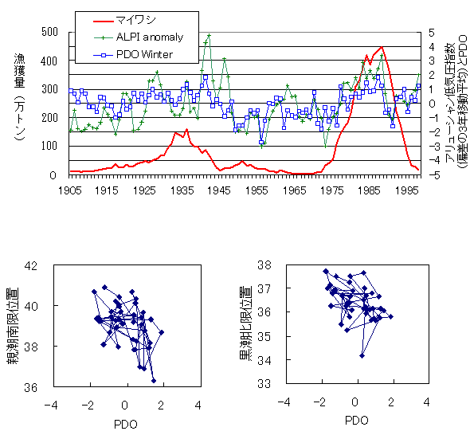

|
２）アリューシャン低気圧とマイワシの関係 冬季アリューシャン低気圧の活動が強化される時期にマイワシの漁獲が増大しており、冬季アリューシャン低気圧の強弱がマイワシ資源の変動に影響を与えている可能性が考えられます。冬季アリューシャン低気圧の活動が強化すれば窒素、リン等栄養塩の豊富な親潮の南下が強まるとともに、黒潮の北限位置も南下し黒潮の流量が多くなる傾向がみられています。 ALPIとはアリューシャン低気圧の強度を示す指数、PDOとは北太平洋の水温の動向を表す指数でアリューシャン低気圧の動向と概ね一致しています。ただし、１９９０年代後半のALPIやPDOとマイワシの漁獲量は一致していません。カリフォルニアマイワシの近年の漁獲量の減少は、日本のマイワシの場合よりも緩やかで、この現象は１９４０年代と類似しています。このため、太平洋規模の気候変動がマイワシ資源の増減の原因としても、より狭い海域に応じた環境変動も関わっていると考えられます。また後述の日本のマイワシの再生産成功率は１９９０年代半ば以降比較的良好なので、漁獲の影響も考えられます。
 [前ページ] [次ページ] [1] [2] [3] [4] [5] [6] [7] [8] 9 [10] [11] [12] [13] [14] [15] [16] [17] |